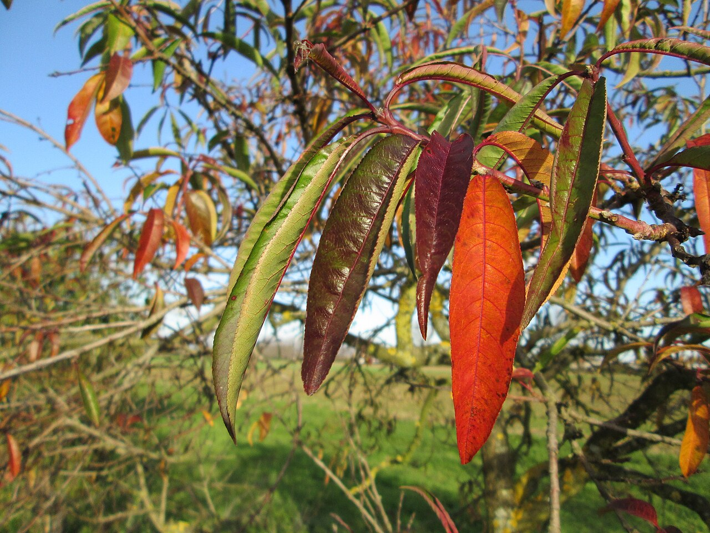

Edible · Introduced · Tree
Almond
Prunus dulcis
- Season
- Blossom late winter; nuts late summer
- How to identify it
- Early pale-pink blossoms before leaves, lance-shaped leaves, fuzzy gray-green fruit splitting to reveal the pitted shell.
- Watch for
- Sweet almonds are edible; bitter-almond seeds (and ornamental Prunus seeds) contain cyanogenic compounds — only eat known sweet-almond trees.
- Common uses
- Shelled nuts raw or roasted.